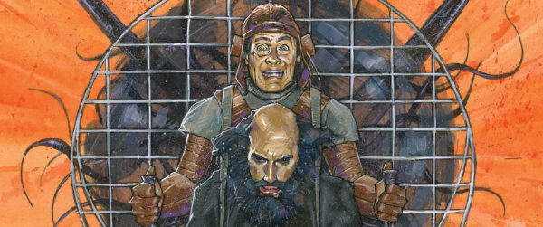

An early 1900s period drama, where Ampney is something of an occult Poirot up against inter-dimensional threats, but often seems as if he's not really in control: it's more his attitude than his aptitude that gets him through.
Art by Simon Davis
| Story Title | Parts | Pages | w indicates a wraparound coverCovers | Year(s) | Issues | Writer | Artist | Colourist | Letterer |
|---|---|---|---|---|---|---|---|---|---|
| Vile Bodies | 6 | 35 | 1612: Simon Davis 1 | 2008 | 1611-1616 | Ian Edginton | Simon Davis | <-- | Ellie de Ville |
| The End of the Pier Show | 7 | 40 | 1666: Simon Davis 1 | 2009-2010 | p2010, 1666-1671 | Ian Edginton | Simon Davis | <-- | Ellie de Ville |
| The List of Ten | 10 | 55 | 1716: Simon Davis 1719: Simon Davis 2 | 2010-2011 | p2011, 1715-1723 | Ian Edginton | Simon Davis | <-- | Ellie de Ville |
| The English Assassin | 11 | 60 | 1754: Simon Davis 1758: Simon Davis 2 | 2011 | 1750-1760 | Ian Edginton | Simon Davis | <-- | Ellie de Ville |
| The Entropy Tango | 11 | 60 | 1814: Simon Davis 1820: Simon Davis 2 | 2012-2013 | p2013, 1813-1822 | Ian Edginton | Simon Davis | <-- | Ellie de Ville |
| >> Posters / Teasers << | |||||||||
| The End of the Pier Show | 1 | 1 | 0 | 2009 | 1650 | n/a | Simon Davis | <-- | n/a |
| year | episodes | pages |
| 1999 | 0 | 0 |
| 2000 | 0 | 0 |
| 2001 | 0 | 0 |
| 2002 | 0 | 0 |
| 2003 | 0 | 0 |
| 2004 | 0 | 0 |
| 2005 | 0 | 0 |
| 2006 | 0 | 0 |
| 2007 | 0 | 0 |
| 2008 | 6 | 35 |
| 2009 | 1 | 10 |
| 2010 | 7 | 40 |
| 2011 | 20 | 105 |
| 2012 | 1 | 10 |
| 2013 | 10 | 50 |
| 2014 | 0 | 0 |
| 2015 | 0 | 0 |
| 2016 | 0 | 0 |
| 2017 | 0 | 0 |
| 2018 | 0 | 0 |
| 2019 | 0 | 0 |
| 2020 | 0 | 0 |
Comic strip data (excludes other content):